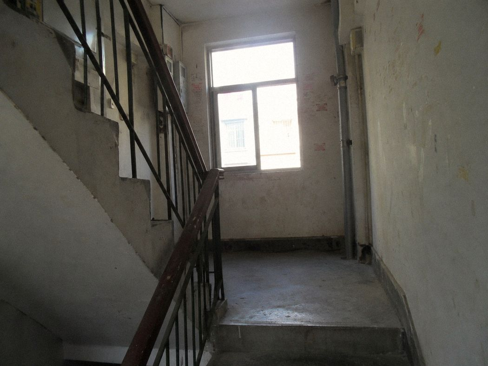
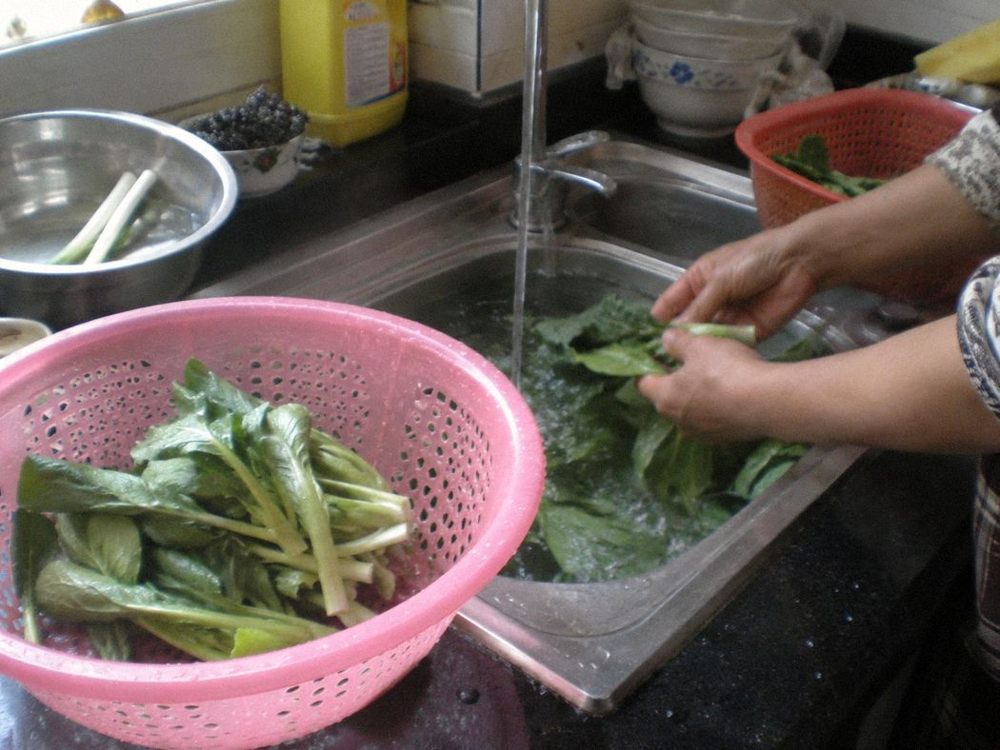
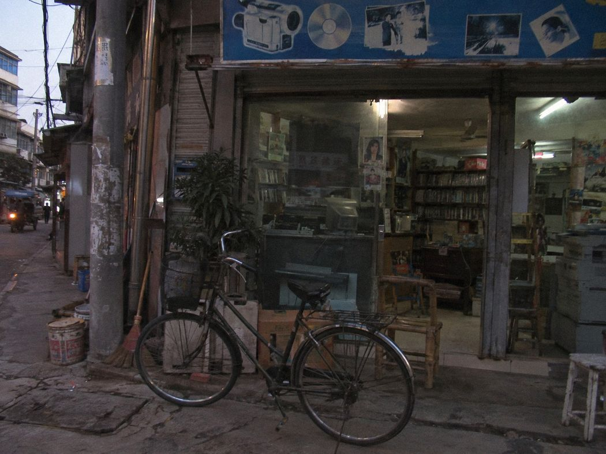
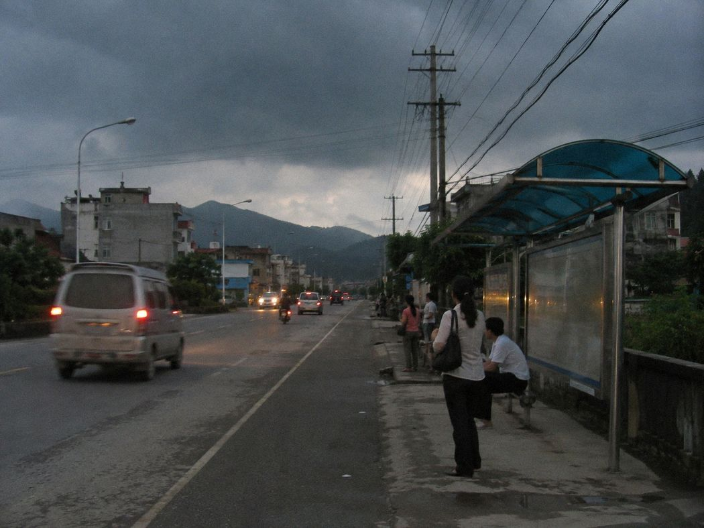
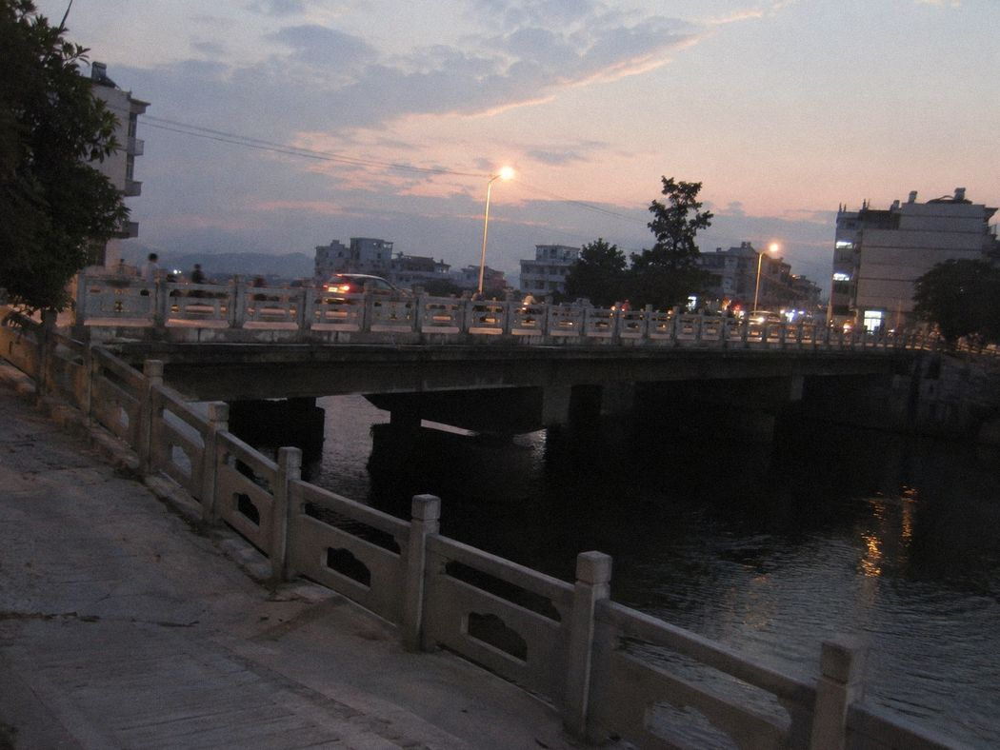
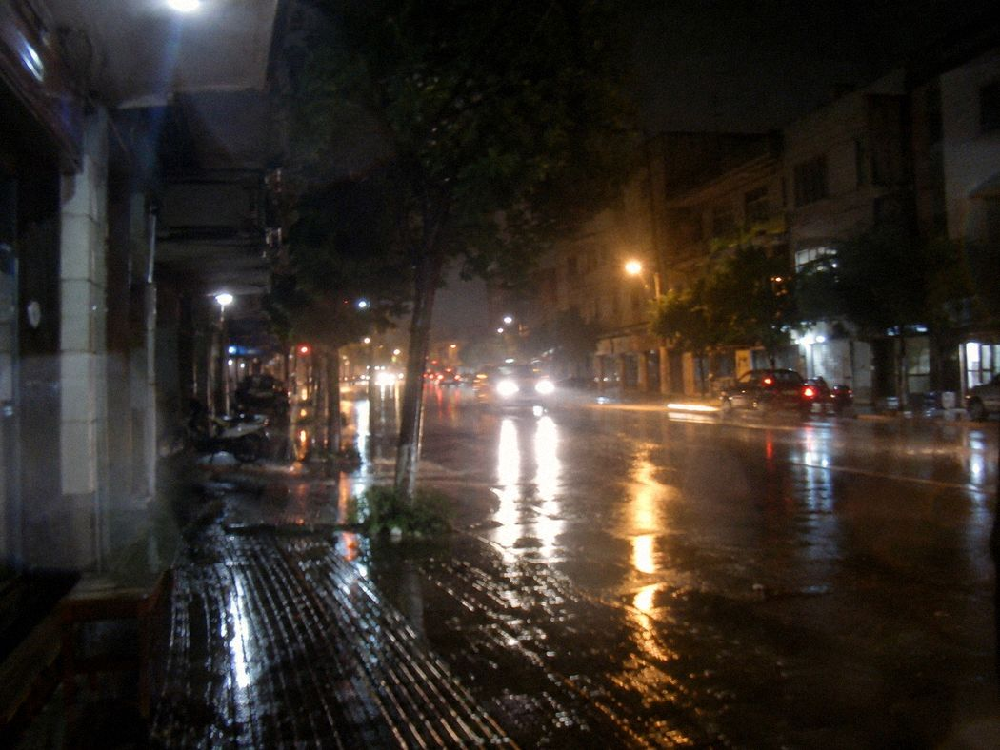
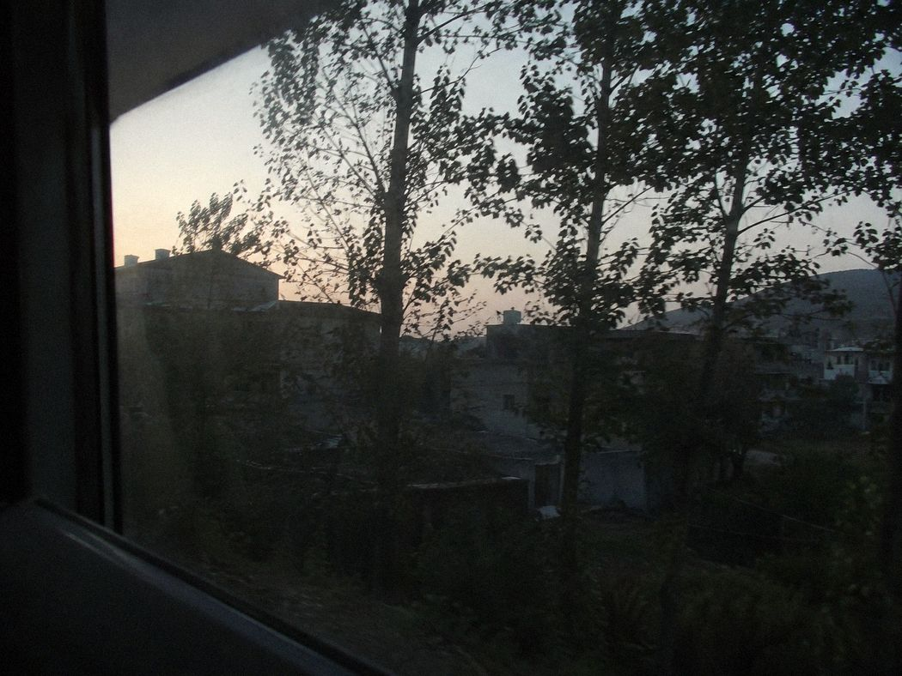

8张JPEG
恢复副本：8个JPEG。相机文件名未改；FAT重建后的目录项如下。另发现TXT草稿一份。







作品说明.txt / 草稿
妈洗菜。她不让我拍脸。
小鸣写作业，一直说别拍。
白鸽门口。谢远的车又停歪了。
桥头。本来想拍灯，太暗了。
回来的时候开始下雨。
本机整理区（不写回SD卡）
2026-09-23 建立本机整理目录；contact_sheet.csv、route_note.txt 仅写本机，不写回原卡。
contact_sheet.csv本机照片联系表未建立已保存road_bundle/地方资料检索副本2009-08-15 / 3份文字 / 1张图件road_bundle/本机资料目录未生成route_note.txt本机路线说明等待联系表草稿已保存